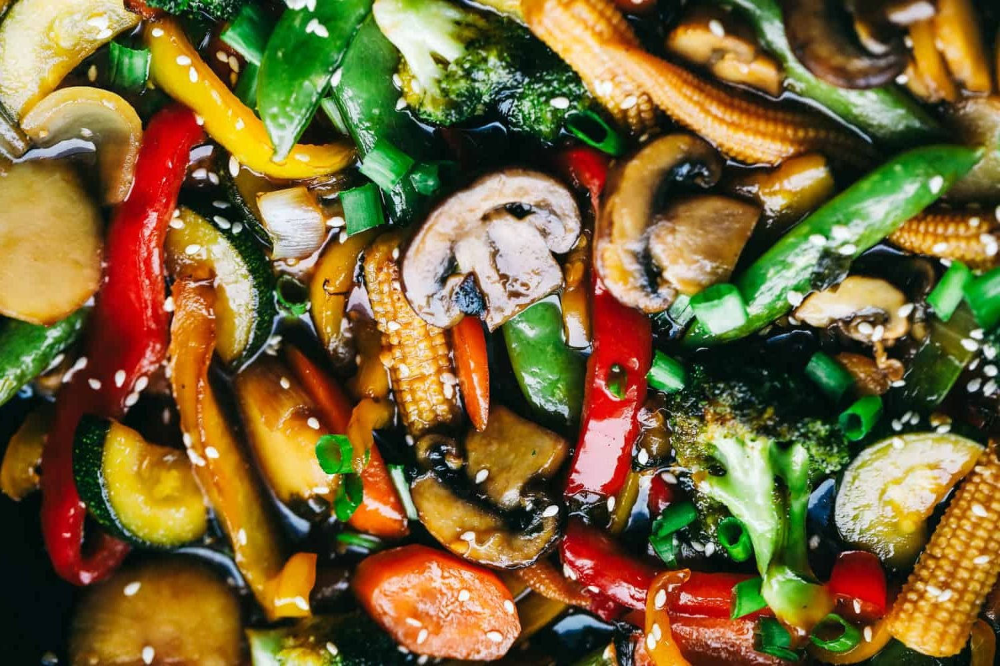

Vegetable Stir Fry

Description
This is the recipe that gets me through the week! I love how simple and easy it is
to cook and how delicious it tastes. There are so many variations to this recipe
that it is perfect to make with a family.
Ingredients
- 1 tablespoon olive oil
- 1 red bell pepper, sliced
- 1 yellow bell pepper, sliced
- 1 cup sugar snap peas
- 1 cup carrots, sliced
- 1 cup mushrooms, sliced
- 2 cups broccoli
- 1/4 cup soy sauce
- 3 garlic cloves, minced
- 3 tablespoons brown sugar
- 1 teaspoon sesame oil
- 1/2 cup chicken broth
- 1 tablespoon cornstarch
Instructions
- Add 1 tablespoon olive oil over medium-high heat in a wok or large skillet.
Add bell pepper, peas, carrots, mushrooms, and broccoli. Sauté 2-3 minutes
until veggies are almost tender.
- In a small whisk together soy sauce, garlic, brown sugar, sesame oil,
chicken broth, and cornstarch.
- Pour over veggies and cook until the sauce has thickened. Garnish with
chopped green onions and sesame seeds if desired.